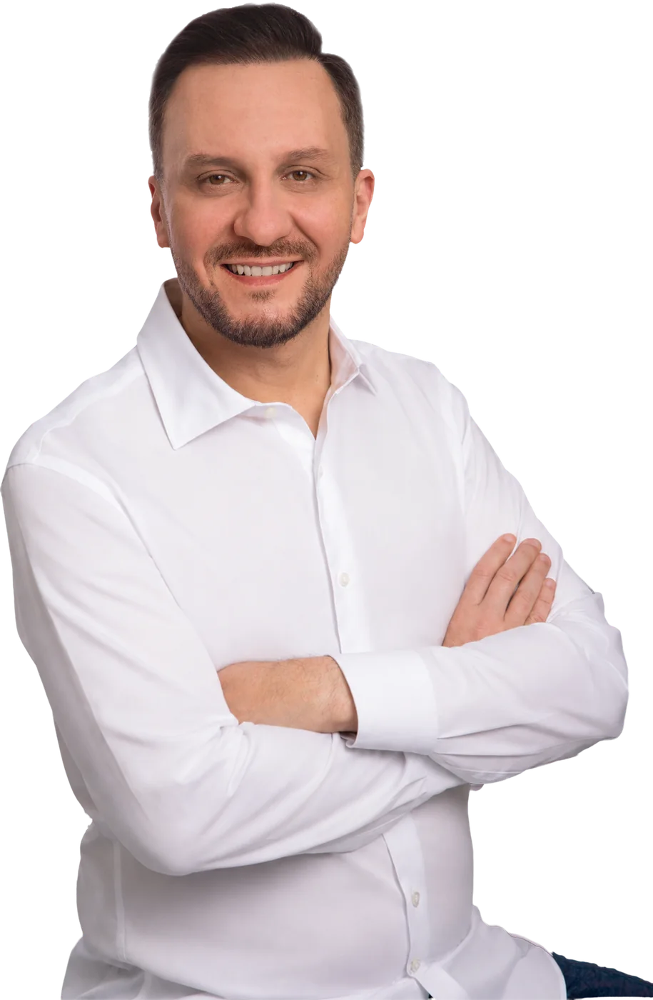

Infraestrutura
Obras que impactam a mobilidade e a economia regional.
- SC-370: Tubarão a Braço do Norte
- Redragagem do Rio Tubarão e Molhes da Barra
- BR-101 e obras estruturantes na AMUREL
Deputado Estadual · Santa Catarina · Progressistas

Trabalho pelo Sul
e por Santa Catarina.
Advogado, ex-vereador, ex-prefeito de Tubarão e deputado estadual. Um mandato com foco em infraestrutura, saúde, inclusão e desenvolvimento regional.

Trajetória
Natural de Tubarão, Pepê Collaço construiu sua trajetória a partir da realidade dos municípios do Sul Catarinense. Foi vereador, presidente da Câmara, vice-prefeito e prefeito antes de chegar à Assembleia Legislativa.
Sou advogado e apaixonado pelo legislativo bem feito.
Hoje, como deputado estadual, preside a Comissão de Constituição e Justiça (CCJ) da Alesc e coordena a Frente Parlamentar em Defesa da Pessoa com Autismo em Santa Catarina.
De Tubarão à Assembleia
Início
Três mandatos em Tubarão. Presidente da Câmara em duas ocasiões.
Câmara
Liderança no Legislativo municipal de Tubarão.
Executivo
Atuação no executivo municipal de Tubarão.
Gestão
Gestão municipal com foco em infraestrutura e desenvolvimento.
Estado
Diretor do DETER-SC e Secretário Adjunto da Defesa Civil.
2023–2026
20ª Legislatura. Presidente da CCJ. Frente do Autismo.
Prioridades do mandato
Sete áreas de atuação que orientam as ações, emendas e projetos do mandato.
Obras que impactam a mobilidade e a economia regional.
Recursos para hospitais, exames e atenção básica.
Coordenador da Frente Parlamentar em Defesa da Pessoa com Autismo.
Apoio a organizações que prestam serviços essenciais nas cidades.
Recursos para Polícia Militar, bombeiros e estrutura de segurança.
Investimentos para criança, escola e cultura nos municípios.
Apoio ao pequeno produtor e à infraestrutura rural.
O mandato atua em praticamente todas as associações de SC.
Galeria
Emendas e ações
Entre os recursos e ações acompanhados pelo mandato:
Municípios beneficiados
Frente Parlamentar
Pepê Collaço coordena a Frente Parlamentar em Defesa da Pessoa com Autismo e defende que Santa Catarina avance com dados, atendimento e políticas públicas reais para as famílias.
A proposta de um censo ou plataforma de mapeamento de pessoas com TEA em SC envolve a Alesc, universidades, APAEs e AMAs, com o objetivo de orientar políticas públicas com dados reais.
Plataforma para mapear pessoas com autismo em SC, com participação de universidades, APAEs e AMAs.
Emendas recorrentes para terapias em Laguna, Gravatal, Braço do Norte, São Ludgero, Jacinto Machado e outros.
Implantação de salas sensoriais na rede de ensino de municípios catarinenses, como Treviso e Nova Veneza.
Custeio de programas de atendimento e apoio a associações que trabalham com pessoas com TEA em todo o Estado.
Legislativo
À frente da Comissão de Constituição e Justiça, Pepê Collaço atua na análise das matérias de maior complexidade jurídica da Alesc, contribuindo para um legislativo técnico, sério e comprometido com o Estado.
O mandato atua ouvindo os municípios, buscando recursos e defendendo obras que impactam a vida real das pessoas.
Contato
Entre em contato com o mandato, acompanhe as ações e envie demandas da sua cidade.